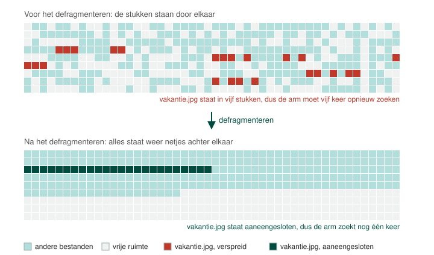

Wanneer we defragmenteren worden alle bestanden weer netjes achter elkaar geplaatst. Dit zorgt ervoor dat de kop niet moet hergepositioneerd worden om 1 bestand uit te lezen. De kop moet dus nog maar een keer zoeken in plaats van bij elk stuk opnieuw.
Een schijf defragmenteren in Windows kan gemakkelijk met het programma defrag. In Linux is defragmenteren volgens de ontwerpers van het ext bestandsysteem in principe zelfs overbodig, omdat dat bestandssysteem al op voorhand grote blokken schijfruimte voorziet zodat bestanden niet verspreid komen te staan.
